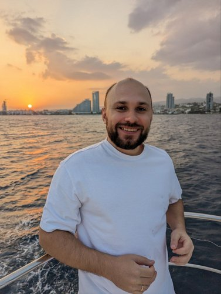

Помогаю с переходом в DevOps, развитием навыков, оценкой резюме и подготовкой к собеседованию. Беру стартапы на DevOps-трансформацию и присоединяюсь к командам part-time / контрактом / на разовые задачи. Передаю реальный опыт, а не учу проходить собеседования.
Смотрю вакансии, а там десятки технологий. Открываю очередной курс и сомневаюсь, туда ли трачу время. Хочется понять, что из моего опыта пригодится и чему учиться дальше.
Разберём, что вы уже умеете, и составим план обучения с задачами для практики.
Опыт есть, задачи решаю, но до собеседований почти не дохожу. Не понимаю, выбираю ли неподходящие вакансии или плохо рассказываю о себе.
Посмотрим ваше резюме и вакансии, на которые вы откликаетесь. Найдём, что изменить и о каком опыте рассказать подробнее.
Делал это руками, но когда просят объяснить, начинаю путаться. После интервью вспоминаю, что мог ответить. А где ошибся, так и не понимаю.
Проведём пробное собеседование по выбранной вакансии. Обсудим ваши ответы и то, что стоит подтянуть перед настоящим интервью.
Курсы прохожу, инструменты пробую. Хочется перейти на следующую позицию, но оценить свои знания сложно.
Сравним ваш опыт с требованиями к интересующей позиции. Выберем, чему уделить время и на каких задачах потренироваться.
Документацию прочитал, несколько решений попробовал, но всё ещё не работает. Нужен человек, с которым можно разобраться, куда смотреть дальше.
Посмотрим на задачу вместе, обсудим, что вы уже пробовали и что ещё можно проверить.
Напишите, что у вас сейчас не получается. Формат и стоимость согласуем до встречи.
Также помогаю с резюме для международного рынка и подготовкой к интервью на английском.